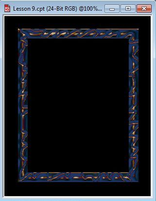

Создание рамки для фото
Этот урок, а точнее идея урока, была мной позаимствована из одного урока по Фотошоп. Мне понравилась полученная там рамка для фотографий. При попытке создать нечто подобное в Photo-Paint, мне пришлось изрядно потрудиться над подбором параметров. В ходе большого числа попыток получить такой же результат, я совершенно случайно его получил и как это иногда бывает, не запомнил какие значения я применял при настройке параметров в фильтрах. Потом повторно я такого же результата так и не получил. Однако получился несколько другой и не хуже, чем тот на который я ориентировался. Вообще, этот урок несмотря на свою кажущуюся легкость (а результат выглядит довольно «повседневно»), довольно полезен, т. к. дабы создать даже такую рамку, пришлось попотеть над подбором различных параметров. А начинающий пользователь Photo-Paint может вообще потратить кучу времени (если терпения хватит) чтобы создать подобную рамку.
1. Создайте пустой документ File > New (Файл > Создать). В диалоговом окне Create a New Image (Создание изображения), в раскрывающемся списке Size (Размер), выберите значение 100х150 мм, хотя можете выбрать другой размер по своему усмотрению. Цвет фона установите черным, а разрешение 96 dpi. Щелкните ОК.
2. В качестве цвета краски, Foreground Color (Цвет переднего плана), установите следующий цвет: R6; G 42; B 104, однако можете выбрать любой другой оттенок голубого цвета.
3. На панели Toolbox (Набор инструментов) выберите инструмент Rectangle (Прямоугольник). На Панели свойств установите толщину контура Outline width (Толщина абриса) равной 20. Кнопки Disable fill (Выключить заливку), Anti-aliasing (Сглаживание) и New Object (Создать объект) нажаты. Создайте прямоугольник произвольного размера, примерно как на рис. 1.
4. Нажмите комбинацию клавиш Ctrl + D, чтобы дублировать объект.
5. Создайте из получившегося объекта маску, нажав комбинацию клавиш Ctrl + M. В данном случае, маска создается по той простой причине, что фильтр, который мы применим на следующем шаге, требует создание маски.
6. Выполните команду Effects > 3D Effects > Bevel Effect (Эффекты > Трехмерные эффекты > Эффект скоса). В диалоговом окне Bevel Effect (Эффект скоса), на вкладке Bevel (Скос) установите следующие параметры (рис. 2), а на вкладке Lighting (Освещение) выполните настройки, как на рис. 3.
Теперь у вас изображение должно выглядеть, как на рис. 4.
7. На панели Toolbox (Набор инструментов) выберите инструмент Brush Mask (Маска кисти) или нажмите быструю клавишу инструмента – B. На Панели свойств, в области Mode (Режим) выберите режим Subtractive mode (Режим вычитания). Размер кисти выберите 5 px, Форма кисти – круглая. Прозрачность = 0, параметр Feather (Размытие ) = 100. «Нарисуйте» инструментом «произвольную линию», как на рис. 5. Конечно, рисунок у вас будет выглядеть иначе, потому что я скриншоту добавил контрастности, чтобы видней была получившаяся маска.
Не бойтесь «рисовать линии» (выделять) инструментом Brush Mask (Маска кисти), вас не должно смущать, что «линии» выходят за пределы объекта. Т. к. вы выделяете в режиме Subtractive mode (Режим вычитания), то все выходящие за пределы объекта области выделения будут проигнорированы. После завершения выделения не забудьте переключиться обратно в режим Normal mode (Обычный режим).
8. Сохраните маску, как канал, для чего выполните команду Mask > Save > Save as Channel (Маска > Сохранить > Сохранить как канал). В диалоговом окне Save Mask As Channel (Сохранение маски как канала) щелкните ОК. Photo-Paint сохранит маску, как канал Alpha 1 (Альфа 1).
9. Создайте из маски объект, нажав комбинацию клавиш Ctrl + стрелка вверх. После создания объекта из маски, маска исчезнет.
10. Загрузите маску из канала: Mask > Load > Alpha 1 (Маска > Загрузить > Альфа 1).
11. Выполните команду Effects > 3D Effects > The Boss (Эффекты > Трехмерные эффекты > Бобышка). В диалоговом окне фильтра установите значения параметров, как на рис. 6 и 7.
Теперь ваше изображение примет вид, как на рис. 8.
12. Удалите маску, щелкнув кнопку Remove mask (Удаление маски) на Стандартной панели инструментов.
На этот момент, у вас создано 3 объекта, в чем вы можете убедиться в докере Objects (Объекты).
13. Переместите теперь самый нижний объект (он должен у вас по умолчанию называться Object 1), вверх, чтобы он стал по середине между двумя другими объектами, рис. 9.
14. Выделите в докере Objects (Объекты) самый верхний объект, Object 3. Теперь выполните команду Effects > 3D Effects > Emboss (Эффекты > Трехмерные эффекты > Рельеф). В диалоговом окне фильтра установите значения параметров, как на рис. 10.
В докере Objects (Объекты) для выделенного объекта, в списке Merge mode (Режим слияния) выберите режим Difference.
Теперь, ваша рамка готова, рис. 11.

15. Теперь осталось только объединить объекты вместе. Для этого выделите все объекты в докере Objects (Объекты) и щелкнув правой кнопкой мыши, выберите команду Combine > Combine Objects Together (Объединить > Объединить объекты).
В завершение всего, вы можете наклонить рамку, переключившись на режим Distort (Искажение) и вставить понравившиеся изображение. Для примера, я вставил в рамку свой аватар, рис. 12. Правда, дополнительно добавил подсветку позади рамки.
В заключение хочу сказать, на что следовало бы обратить внимание, точнее от чего особенно зависит окончательный результат. Естественно, результат зависит от всех выполняемых действий, но тем не менее, заострю внимание на некоторых моментах. В самом начале выполняемых действий имеет значение инструмент выделения, с помощью которого вы будете создавать маску. Я использовал Brush Mask (Маска кисти). Но в ходе экспериментов пробовал также использовать инструмент Lasso Mask (Маска лассо). Результат получается несколько другой и не всегда хороший, хотя можно добиться очень интересных эффектов, однако довольно сложно создать удачную маску. При использовании Brush Mask (Маска кисти) имеет значение размер кисти и форма созданной маски (хотя форма маски также важна и при использовании Lasso Mask (Маска лассо)). Чтобы создать более или менее правильную маску, нужно делать мазок (вся маска делается как один мазок, т. е. рисуется непрерывно от начала до конца) в виде волнистой линии под углом примерно 30-50 градусов по направлению снизу и вправо вверх. Кроме того волнистая линия должна периодически чередоваться небольшими прямыми участками и местами быть не на всю ширину стороны рамки.
В окнах фильтров большое влияние на результат оказывают настройки на вкладках Lighting (Освещение). Даже небольшое изменение направления освещения, довольно сильно изменяет результат. Здесь огромное поле деятельности для экспериментов. Режим наложения в докере Objects (Объекты) также позволяет получать совершенно разные и довольно оригинальные результаты даже при одной и той же последовательности выполнения остальных действий. Так что для того, кто хочет поупражняться в создании рамок, здесь невероятный простор для тренировки.